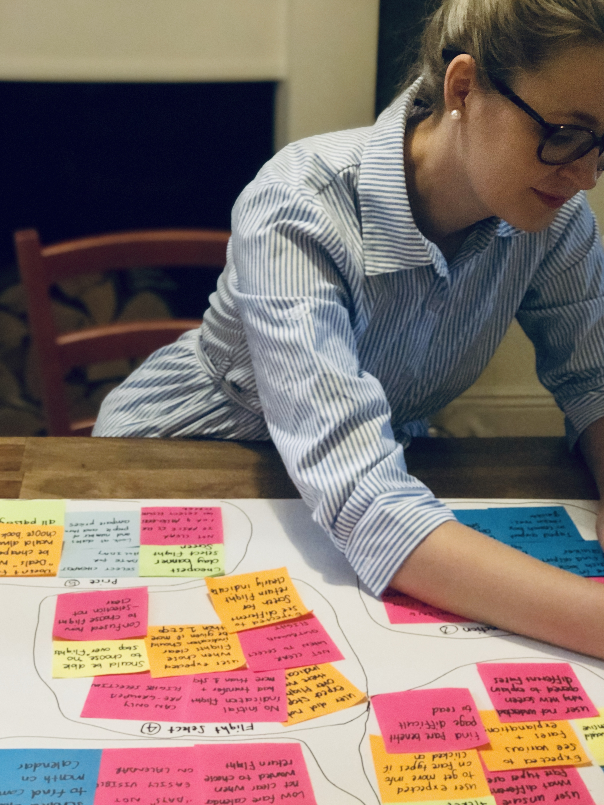

Franciska Du Toit
Home
Portfolio
About
Contact

Collection of Projects & Case Studies
I enjoy working on different types of projects. Click below to see some of the work in my portfolio.
UI Challenges
UX Case Studies
Coding Projects
Other Projects